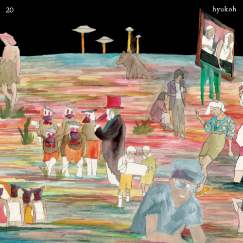
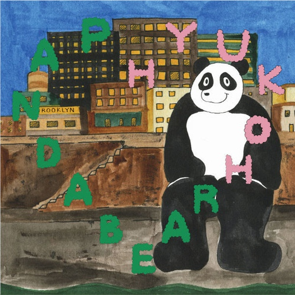

Naver사이트로 이동
<h> 태그
h1태그
h2태그
h3태그
h4태그
h5태그
주로 본문에 사용되는 태그로써, 단락을 구분합니다.
주로 본문에 사용되는 태그로써, 단락을 구분합니다.
주로
본문에
사용되는 태그로써, 단락을 구분합니다.
행바꿈 태그
KOREA
KOREA
SEOUL
KOREA
KOREA
메뉴리스트
menu1
menu2
menu3
menu4
menu5
지역리스트
서울
광주
부산
인천
제주
메뉴리스트
menu1
menu2
menu3
menu4
menu5
지역리스트
서울
광주
인천
제주
강원
국어
영어
수학
100
100
65
평균
65
중간고사 성적
국어
영어
수학
100
100
65
평균
65
일간 급상승 노래

혁오

오혁
혁오밴드
아이유
위잉위잉